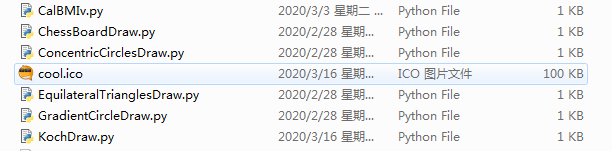
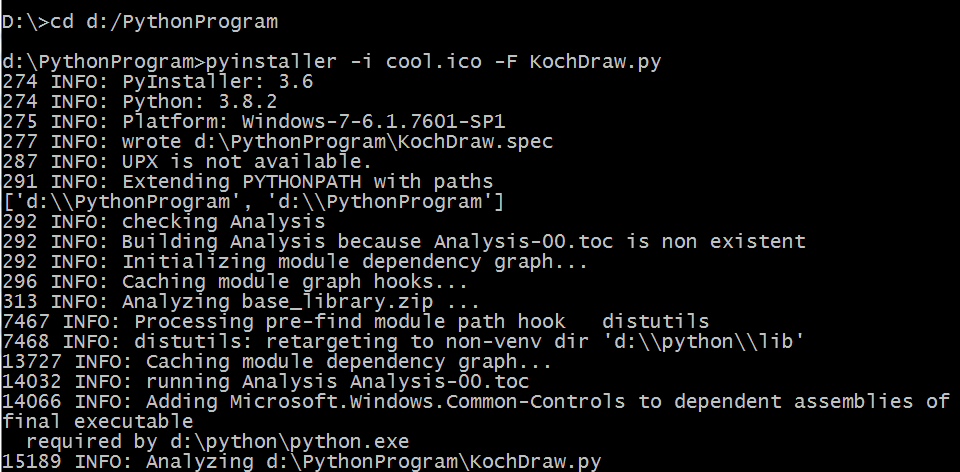
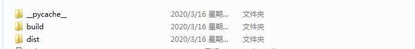
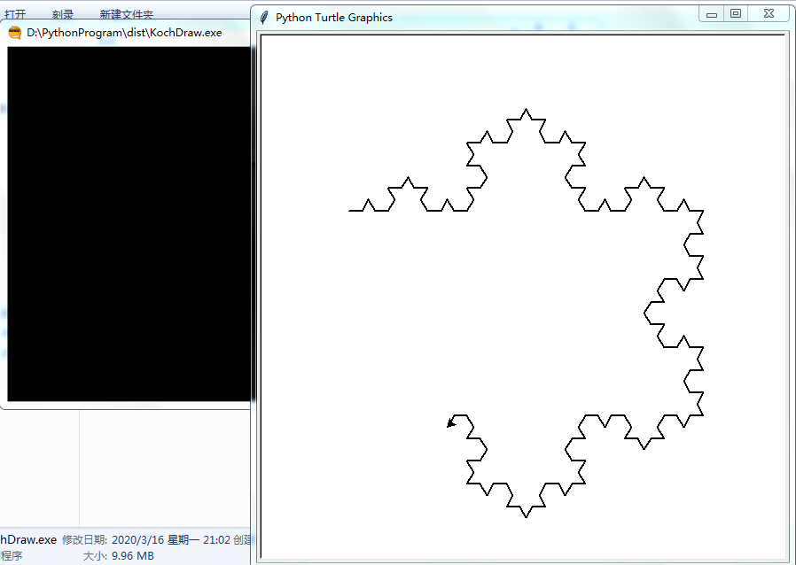

PyInstalle的功能
在创建了独立应用（自包含该应用的依赖包）之后，还可以使用 PyInstaller 将 Python 程序生成可直接运行的程序，这个程序就可以被分发到对应的 Windows 或 Mac OS X 平台上运行。
安装 PyInstalle
安装 PyInstaller 模块与安装其他 Python 模块一样，使用 pip 命令安装即可。在命令行输入如下命令：
pip install pyinstaller
但是在国内使用pip在线安装的方式实在是太慢了，不仅浪费时间，还有可能报超时的错误，就像这样：
raise ReadTimeoutError(self._pool, None, “Read timed out.”)
pip._vendor.urllib3.exceptions.ReadTimeoutError:
HTTPSConnectionPool(host=’files
.pythonhosted.org’, port=443): Read timed out.
为了愉快的下载，我们可以把PIP安装源替换成国内镜像，这样一来就可以大幅提升下载速度，还可以提高安装成功率。
国内源：
- 清华：https://pypi.tuna.tsinghua.edu.cn/simple
- 阿里云：http://mirrors.aliyun.com/pypi/simple
- 中国科技大学 https://pypi.mirrors.ustc.edu.cn/simple
- 华中理工大学：http://pypi.hustunique.com
- 山东理工大学：http://pypi.sdutlinux.org
- 豆瓣：http://pypi.douban.com/simple
使用方法：
可以在使用pip的时候加参数-i https://pypi.tuna.tsinghua.edu.cn/simple
pip install -i https://pypi.tuna.tsinghua.edu.cn/simple pyinstaller
运行上面命令，应该看到如下输出结果：
Successfully installed pyinstaller-x.x.x
安装目录就在你python安装下的$\color{blue}{Scripts}$文件夹下。
我在安装的时候遇到了个小插曲：
WARNING: You are using pip version 19.2.3, however version 20.0.2 is available.
You should consider upgrading via the ‘python -m pip install—upgrade pip’ command.
这里报的错误就是PIP要更新才能进行pyinstaller的安装，只需在安装第三方库前更新PIP就可以。
python -m pip install --upgrade pip
PyInstaller 常用选项
| 参数 | 描述 |
|---|---|
| -h | 查看帮助 |
| —clean | 清理打包过程中的临时文件 |
| -D，—onedir | 默认值，生成dist文件夹 |
| -F，-onefile | 在dist文件夹中只生成独立的打包文件 |
| -i<图标文件名.ico> | 指定打包程序使用的图标（icon）文件 |
举个例子
用命令行工具cmd进入到要做成exe的文件目录下，执行如下命令：
pyinstaller -i cool.ico -F KochDraw.py
cool.ico是文件生成所用的图标，KochDraw.py是用turtle画的科赫雪花python文件。


在上面命令中使用了-F 选项，该选项指定生成单独的 EXE 文件，因此，在 dist 目录下生成了一个单独的KochDraw.exe 文件；与 -F 选项对应的是 -D 选项（默认选项），该选项指定生成一个目录（包含多个文件）来作为程序。

效果如下：

Python也可以用作后端开发，但是相比于php和java，python在开发效率上并没有大幅度提升。因此，php和java还是霸占着后端编程领域。不过呢，也是可以去试一试的。
This is copyright.